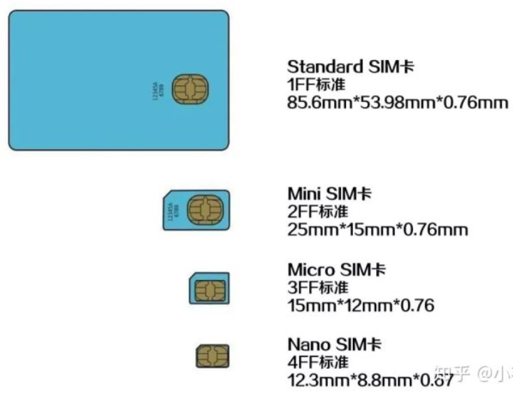
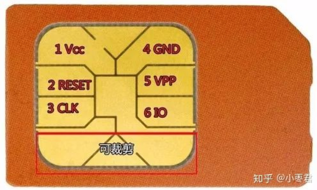

SIM卡复制原理
SIM卡复制原理
GSM手机要想得到GSM系统的服务需要插入一张SIM卡。因为GSM系统是通过SIM卡来识别用户的，而不是基于手机来识别。
移动终端上必须装上sim卡才能使用，sim卡是整个GSM系统（全球移动通讯系统）中唯一确认用户身份的设备。
常用缩写
SIM，Subscriber Identification Module，客户识别模块（也称用户身份识别卡）。
IMEI，国际移动设备识别码。由15位数字组成，每台手机对应一个IMEI，为全世界独一无二的。
MEID，移动设备识别码。由14位十六进制字符组成。
IMSI，国际移动用户识别码。通过IMSI可反查运营商、归属地、手机号码等信息。
sim卡的演进
1991年，德国捷德公司开发了世界第一张SIM卡，大小是一个名片的大小。此类卡是标准SIM卡，也叫“原卡”。
中国移动通信起步较晚，没赶上“原卡”时代，因此我们一开始接触到的是Mini SIM卡。再之后由于手机逐步小型化，2010年出现了Micro SIM卡，首先使用在苹果公司的产品上，如ipad、iphone4。2011年，苹果公司提出了更小的sim卡标准——Nano SIM卡。

以上的演进，说白了就是剪卡过程，并不是什么技术演进。
但是Nano SIM卡还是占据较大的空间，在小型可穿戴设备上不实用，而且卡槽中放卡的方式不稳定。因此发展出了eSIM卡Embeded-SIM，直接嵌入到电路板上。
但是eSIM仍然是一个硬件。现在还出现了依靠操作系统软件实现SIM卡功能的softSIM和vSIM，这样就完全告别实体SIM卡片了。
伴随着网络变化，sim卡的变化：
- SIM卡存在无法接入LTE/IMS网络的局限性
- USIM可接入LTE/2G/3G网络，但不存储IMS网络相关的用户信息，因此接入VoLTE网络时，还需要通过终端导出IMS注册时所需要的用户码号信息。
- ISIM卡是在USIM卡的基础上，增加了ISIM模块，专门用于存储IMS网络相关用户码号和归属地信息。可以通过读取ISIM模块中的信息直接接入VoLTE网络。
sim卡硬件特性
sim卡是一个装有微处理器的芯片卡。
下面看一看实际的sim卡长什么样：

sim卡通过这些铜制接口将卡内逻辑电路与移动终端连接起来。其中与移动终端连接的有如下六个触电：电源（Vcc），复位（RESET），时钟（CLK），接地端（GND），编程电压（VPP），数据I/O接口（Data）
sim卡硬件内部包含如下五个模块：
- 微处理器cpu，8位
- 程序存储器ROM，3~8kbit
- 工作存储器RAM，6~16kbit
- 数据存储器EPROM，128~256kbit
- 串行通信单元
使用时，手机会向sim卡发送命令，sim卡根据标准规范执行后，给手机反馈执行结果。
sim卡的功能
1、存储数据：
- 固定数据：这类数据在ME（Mobile Equipment）被出售之前由SIM卡中心写入，包括国际移动用户识别号（IMSI）、鉴权密钥（KI）等
- 临时数据：指的是网络相关的的临时数据，如位置区域识别码（LAI）、移动用户暂时识别码（TMSI）、禁止接入的公共电话网代码等
- 业务代码：如个人识别码（PIN）、解锁码（PUK）、计费费率等
- 电话号码、短消息等用户记录
（以上四类数据，除第一类只有专业部门能查阅和更新外，其他几类都是手机可查阅和更新的）
2、PIN码保护
3、用户身份鉴权
4、SIM卡中的保密算法及密钥
sim卡认证
SIM卡中没有存储本机号码，仅有IMIS号。当我们在营业厅申请并注册手机号时，运营商将手机号码与SIM卡的IMSI号、序列号以及鉴权密钥Ki做登记，储存在数据库里。
SIM卡插入到手机中开机时，手机向SIM卡请求IMSI，然后把IMSI发送给运营商。运营商在数据库中查找是否存在这个IMSI并判断是否为合法用户，然后获得这个IMSI对应的手机号码和鉴权密钥Ki。
运营商再生成一个随机数RAND，然后将该随机数发送给手机。手机接收到随机数RAND后，将该随机数RAND发送给SIM卡。SIM卡利用RAND和鉴权密钥Ki通过A3算法生成应答SRES，将SRES发送给手机，再由手机转发给运营商。运营商在本地利用RAND和对应的鉴权密钥Ki进行相同的运算，得到X-SRES，并比较SRES和X-SRES是否相同，相同的话就说明这个卡是合法的，允许其接入网络。
上一步骤中，手机端收到RAND时，同时还会让SIM卡利用RAND和Ki计算出一个通信用的加密密钥Kc，计算时用的算法称之为A8。由于A3和A8接受的输入相同，因此实现者偷了个懒，用一个算法同时生成SRES和Kc。
之后的通信过程中，使用加密密钥Kc和A5算法对通信内容进行加密。由于通信内容的加密量巨大，SIM卡无法快速处理如此多的加密需求，因此通信过程中的加密都是在手机上完成的。因此，所有的GSM手机都必须至少支持一种相同的A5算法，否则就无法漫游了。这时候运营商和设备商又偷了个懒，全世界目前都只用一种A5算法。这个算法的做法就是和Kc的8字节序列进行简单的循环XOR，再和报文序号做个减法。
sim卡复制
从以上SIM卡认证原理中，我们知道IMSI和Ki是必不可少的，A3算法也必须知道。IMSI可以通过手机将其从SIM卡中读取出来，但是A3算法和鉴权密钥Ki是无法直接获取的，只能通过某种方法破解。
A3算法一直被作为高级商业机密保护起来。但在1998年左右，有个人泄露了几页关于A3算法的文档到网络上。加州伯克利的几个教授拿到这个文档后，对照着SIM卡研究了一阵，最终将A3算法破解了。这个算法又叫做Comp128。
怎么获取Ki呢？两个思路，一种是把SIM卡拆掉然后接到特殊设备上将Ki读取出来，另一种是利用Comp128去暴力破解、穷举。前一种方法就像用小刀在硬盘上刻操作系统一样不靠谱。后一种方法有一定的限制，SIM卡中的逻辑是一共只能查询2^16次左右，之后卡就不可用了。因此，研究者们只能在可接受的次数之内，通过构造特定明文和分析输出的密文来破解Ki的值。这种方法最终成功了。
由于SIM复制设备越来越多，运营商们不得不发行新算法的卡，这个算法叫做Comp128 v2。这个算法目前为止还没被破解。
reference
SIM卡实现原理：https://www.jianshu.com/p/8c9374f5e581
4G LTE 网只能提供数据服务，不能承载语音通话，该怎么理解？https://www.zhihu.com/question/22365275
SIM卡复制原理：https://cn.club.vmall.com/thread-2454925-1-1.html
关于SIM和eSIM，看这一篇就够啦！https://zhuanlan.zhihu.com/p/47999705
SIM卡中的A3、A5和A8算法：http://www.360doc.com/content/11/0913/22/3129476_148024343.shtml